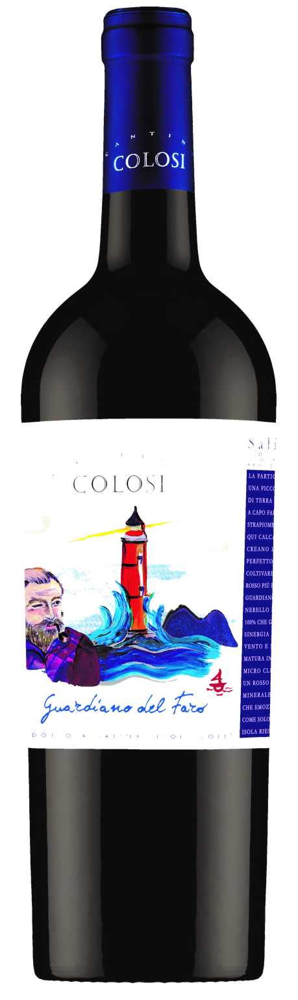

i.
Γεννημένα στη Σικελία
Ανάμεσα στη θάλασσα και το ηφαίστειο, εκεί όπου ο ήλιος ωριμάζει το σταφύλι και ο αέρας μυρίζει αλάτι — από τη Σαλίνα και τα Αιολικά Νησιά.
Από τη Σικελία στο τραπέζι σου
Επιλεγμένα κρασιά της Σικελίας, με χαρακτήρα και καταγωγή.



Ανάμεσα στη θάλασσα και το ηφαίστειο, εκεί όπου ο ήλιος ωριμάζει το σταφύλι και ο αέρας μυρίζει αλάτι — από τη Σαλίνα και τα Αιολικά Νησιά.
Συνεργαζόμαστε με το ιστορικό οινοποιείο Cantine Colosi, με σεβασμό στην ταυτότητα και την παράδοση του σικελικού αμπελώνα — από ντόπιες ποικιλίες, φτιαγμένες με μεράκι.
Μια γέφυρα ανάμεσα στη Σικελία και την Ελλάδα. Κρασιά που δεν φωνάζουν — αλλά μιλούν σε εκείνους που ξέρουν να ακούν.
«Ο ήλιος της Σικελίας, φυλαγμένος σε γυαλί.» η υπόσχεση της Cellar·K
Ο κατάλογος
Επιλεγμένες ετικέτες της Cantine Colosi — λευκά, ερυθρά, ροζέ και γλυκά κρασιά από τη Σαλίνα και τη Σικελία.
Για εστιατόρια & κάβες
Προσθέστε τη Cellar·K στη λίστα ή στο ράφι σας. Ανοίξτε λογαριασμό χονδρικής για τιμές κιβωτίου και απευθείας παραγγελία — ή αγοράστε μεμονωμένη φιάλη ως πελάτης.